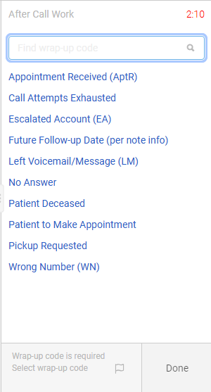

Appointment Needed
It is the task of obtaining Doctor's appointment information from Patients or Patient's POA. The reason for call may also depend on what is needed on the patient's documentation after being reviewed by the NONES group. It could either be an ABN or the need to verify Patient's PCP information or confirmation of the Pick Up from a different provider.
SPIEL FOR VOICEMAIL CALLS (Standard Spiel)
"Hello, this is (YOUR NAME) from (Aerocare/ Youngs Medical/ Ocean Homehealth/ Montgomery Medical/ Family Medical/ Medbridge Medical etc.) an Adapthealth company calling on a recorded line regarding the current billing status of (pt's name/your) equipment. It is important that you call us back as soon as possible to ensure that we have the most up-to-date information on (pt's name/your) account. We can be reached at (844-843-9140). We look forward to speaking with you soon. Thank you."
SPIEL FOR LIVE CALLS / RFC:
" Hi this is ( YOUR NAME) calling on a recorded line from (Aerocare, Youngs medical, etc.) an Adapthealth company. I am looking for (pt's name). Great day (pt's name), we are your Medical Equipment provider and I'm calling in reference to one of your DME in relation to your insurance.
And before, we proceed, can you please verify your DOB for HIPPA compliance. ("Are you authorized to speak on behalf of this patient for his medical care and treatment?")
I am calling today because your Insurance Company which is under Medicare is requiring that we obtain updated sets of qualifying documents in order to continue billing for your DME. For us to obtain these requirement I would like to know if you (the pt) had any recent appt or upcoming appt with your PCP? " (Ask for the MD's complete name, phone number and fax number if available) (If there is no recent or upcoming appt advise pt to call DO and make an appt ASAP) / (Verify with pt if the MD's info we have on file her current PCP)
And before, we proceed, can you please verify your DOB for HIPPA compliance. ("Are you authorized to speak on behalf of this patient for his medical care and treatment?")
I am calling today because your Insurance Company which is under Medicare is requiring that we obtain updated sets of qualifying documents in order to continue billing for your DME. For us to obtain these requirement I would like to know if you (the pt) had any recent appt or upcoming appt with your PCP? " (Ask for the MD's complete name, phone number and fax number if available) (If there is no recent or upcoming appt advise pt to call DO and make an appt ASAP) / (Verify with pt if the MD's info we have on file her current PCP)
- REMEMBER:
- Perform EEC (Electronic Elegibility Check) to check if insurance is Active
- Update the call attempts in SO
- Once an appointment is obtained, Flip Stop Billing to Appointment Scheduled . Change DOD to Date of Appointment.
- If not, update Call Attempt and Stop Billing should remain to Appt Needed
- The number of call attempts to the Patient should reach Call Attempt 03 before you can flip the STOPPED BILLING to MRPCE (Manager Review Patient Contact Exhausted)
- You can make a follow up every after 3 Business days to avoid complains for harrassment.
- If the Patients refuses HIPAA Verification - Move the Stop Billing to MR-AR (Manager Review - Asset Recovery) and close the Patient Requalification Needed Note
- If the account is in Branch Review/Asset Recovery or accounts needing to be skipped, make the call attempt and end it within 45 seconds. You do not need to wait for it to be routed to VM or for you to hear the ring. You have to end it right away in order for the Wrap Up Code to show up "Future Follow Up ". Make the necessary notes on the account and on the PureCloud Note
- Remember to choose the correct Wrap Up Codes after the call is made 
- For Special Cases of PT is in Nursing Facility: Call the Facility to verify if they can provide their own Wheelchair or PT will either pay Out-Of-Pocket or Pick-Up
- Or if PT is in Nursing Facility, REHAB, Admitted at a hospital with No Discharged date - We need to create Pick Up ticket and send them to Branch. We need to call them if discharge date was provided. If it's in Assisted Living, we can still dispense or Requalify

-
Note Templates:
- Called pt at 931-200-8352 for appointment details, routed to voicemail || left voicemail || Call exhausted || Flipped to MRPCE.
- Skipped || pt has been called recently. We will callback after 3 business days to observe SOP and avoid harassment complaint.
- Patient refused to verify DOB and does not want to be called again || Flipped to Manager Review
- Skipped || SO is in ARP - BRANCH REVIEW || no longer for appt dialer.
- Skipped || SO is in ARP 1- ASSET RECOVERY || no longer for appt dialer.
- Call Attempt 3/3 Call exhausted || Flipped to MRPCE
- Dialed the number ( ). No answer - number no longer in service. Flip to MR-AR
- Dialed the number ( ).Call got routed to voicemail || Unable to leave message - voicemail box full.
- Dialed the number ( ).Call got routed to voicemail || unable to leave message - not set up yet.
- Dialed the number ( ). No answer - auto disconnect.
- Dialed the number ( ). No answer - request time out.
- Checked Eligibility || Part C Medicare Advantage (MCO) enrollment with CARITEN HEALTH PLAN INC. from 11/1/2024 || Flipped WIP state to .6B Updated Insurance Needed.
- Patient is no longer using the equipment and agreed for a pick-up, verified address and created p/u ticket || Updated SO
*This is situational, you will have to document what happened on the call accordingly.